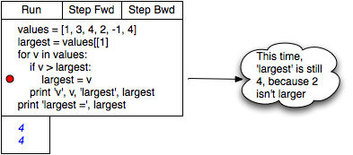

The Tool I Want
I want to make the next version of the Software Carpentry material more dynamic. I’m planning to use screencasts to show people how to use a debugger and other power tools, but I don’t like screencasts for showing programming examples: the text is often hard to read (even when anti-aliased), and they’re almost never accessible to the visually impaired.
What I’d like instead is a Javascript widget I can embed in a web page that will step forward and backward through a fixed piece of code and its output. This isn’t the same thing as Try Haskell and other “sandbox in a browser” tools that let people write and run arbitrary snippets of program. Instead, I want to say, “Here’s a piece of Python (or whatever), here are the pop-up comments I want to appear at various points in its execution, and here’s the output I want displayed at other points.” In the browser, it would look like this:

(You can see why I’m not allowed to design user interfaces…) “Step Forward” and “Step Backward” don’t actually execute code; instead, they replay a previously-recorded execution sequence and its textual output. Whoever created that sequence can add explanatory notes (like the bubble shown) that appear and disappear as execution proceeds.
Three things are needed to make this happen:
- A desktop tool for recording and annotating the execution of small programs.
- A data format for storing those recordings and annotation.
- A Javascript widget for playing them back in the browser.
Ideally, this combination would also handle interactive interpreter sessions, in which the program appears as you go along, and output is interleaved with input. If you know of something that already does this, I’d welcome a pointer; if you don’t, and are looking for a really cool course project, please give me a shout.